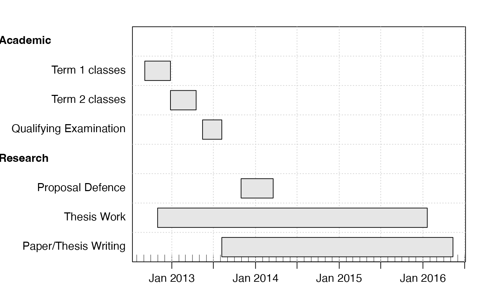

This creates a gantt object.
Arguments
- key
integer key for task, normally 1 for the first task, 2 for the second, etc.
- description
character string describing the task (brief)
- start
start date for task (POSIXt or character string that converts to POSIXt with
as.POSIXct()- end
end date for task (POSIXt or character string that converts to POSIXt with
as.POSIXct().- done
percentage completion for the task
- neededBy
optional key for a dependent task
Value
A gantt object; for details, see read.gantt().
See also
Other things related to gantt data:
gantt,
gantt-class,
ganttAddTask(),
plot,gantt-method,
read.gantt(),
summary,gantt-method
Examples
library(plan)
arrive <- as.POSIXct("2012-09-05")
month <- 28 * 86400
year <- 12 * month
leave <- arrive + 4 * year
startT1 <- arrive
endT1 <- startT1 + 4 * month
startT2 <- endT1 + 1
endT2 <- startT2 + 4 * month
startQE <- arrive + 9 * month
endQE <- arrive + 12 * month
QEabsoluteEnd <- arrive + 15 * month
startProposal <- arrive + 15 * month # for example
endProposal <- arrive + 20 * month
startThesisWork <- arrive + 2 * month # assumes no thesis work until 2 months in
endThesisWork <- leave - 4 * month
startWriting <- leave - 36 * month
endWriting <- leave
g <- as.gantt(
key = 1:8, c(
"Academic",
"Term 1 classes",
"Term 2 classes",
"Qualifying Examination",
"Research",
"Proposal Defence",
"Thesis Work",
"Paper/Thesis Writing"
),
c(
startT1, startT1, startT2, startQE, startProposal, startProposal,
startThesisWork, startWriting
),
c(
startT1, endT1, endT2, endQE, startProposal, endProposal,
endThesisWork, endWriting
),
done = rep(0, 7)
)
plot(g,
xlim = c(arrive, leave),
ylabel = list(font = c(2, rep(1, 3), 2), justification = c(0, rep(1, 3), 0))
)
